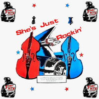

VA - She Just Rockin' (Compilation, 1987)
the Sticks Trio:
01 - She's Just Rockin' (2:05)
the Bootleggers:
02 - Get On The End Of This (2:46)
the Hayriders:
03 - Rockin' Chair (2:23)
the Niteshift Trio:
04 - Life Could Be Easy (3:22)
the Playboys:
05 - Hot Hot Baby (3:45)
the Wigsville Spliffs:
06 - Buzz Outta You (2:59)
Rusti Steel and the Tin Tax:
07 - What Ya Rootin' Fer (1:54)
Rockin' Rocket 88:
08 - My Babe's Gone Away (2:59)
the Oakville Tune Wranglers:
09 - Rooster Blues (1:43)
the Deltas:
10 - Heart Attack (2:25)
the Sunset Valley Boys:
11 - Low Down Life Blues (6:13)
© Fury Records :: [F3001]
Notes
United Kingdom.
My experience is based on its Digital release with only eleven tracks
reference information: Discogs®
Review
344/366 (Project 366)
Rockabilly Rock compilation from the late eighties. There are modish UK bands with charmed sound and indomitable tunes. All is around Rockabilly and Rock'n'Roll with its Revival and Authentic blend, (neo) and psycho tones, countrified and lyrically rockin' novelty. It all starts with a pretty rebel sound, wild and even a bit (neo). It then fades into a very rustic and atmospheric sound. And it ends with two very eccentric songs, which in a sense combine two shades (rockabilly / rusticana) of tracklists in one tone and are, say, an extreme form of emotions and power of arrangements. Thus putting an exclamation point, and not an end.
So, almost all the songs have pronounced energetic tides and a special groove. It is felt how pleasured it was for the musicians. Somewhat straightforward, somewhat inventive and surely rockin'.